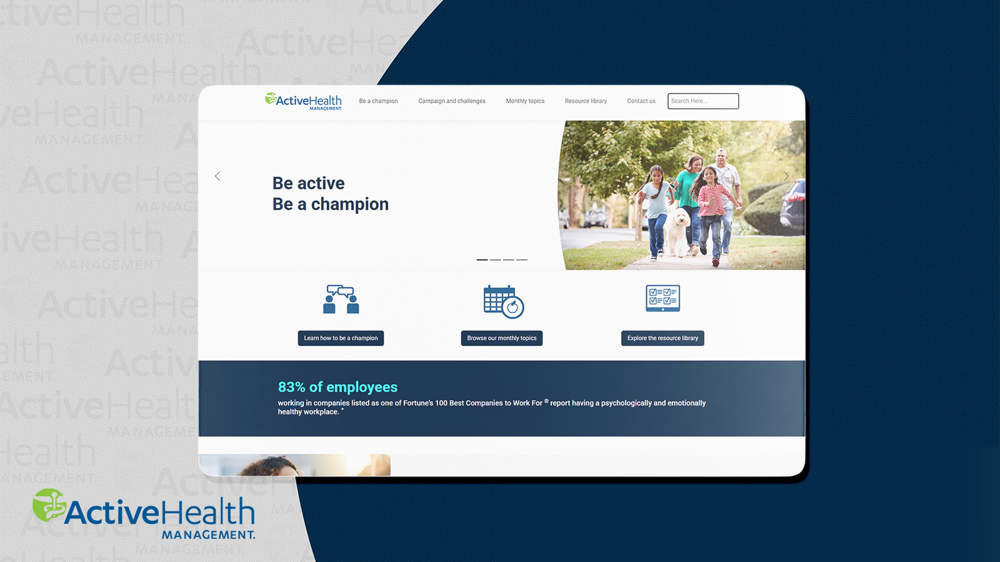
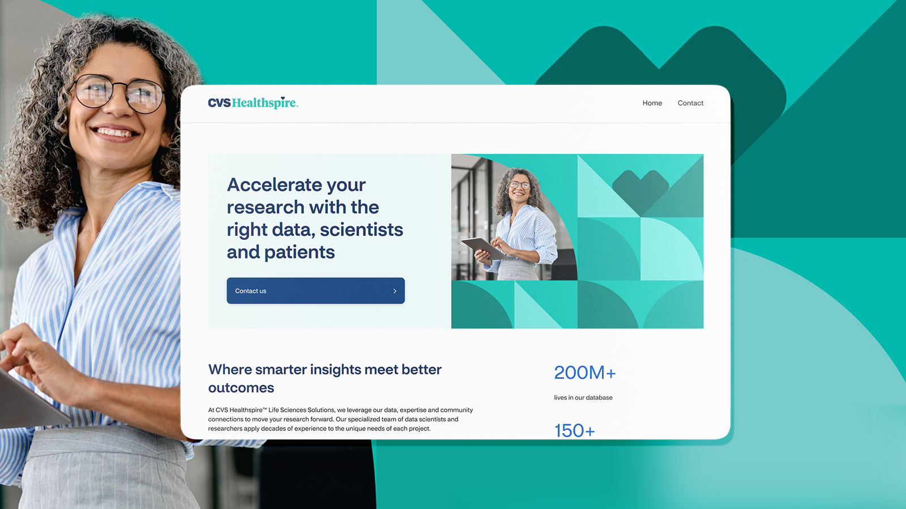
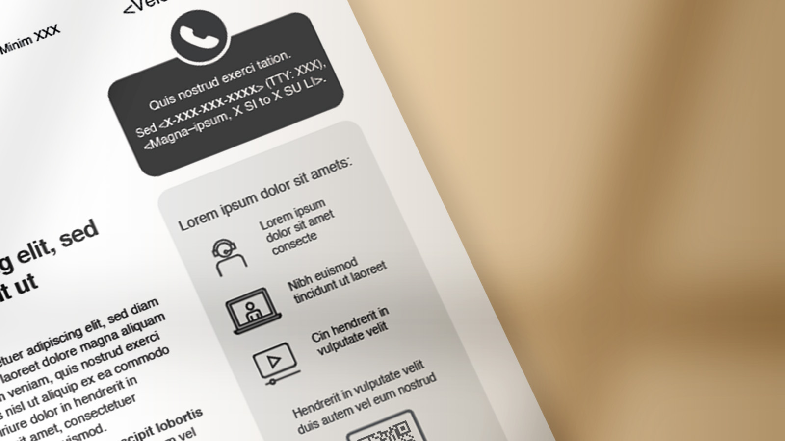

UX Design · Accessibility · Print, Email, Web & Product
I make complex
things feel simple
for everyone.
I’ve spent seven years designing across print, email, web, and digital product — growing from the details of a single communication to the architecture of full platforms.
My Work
Case Studies
ActiveHealth · Wellness Program
Redesigning the ActiveHealth Wellness Toolkit
The ActiveHealth Wellness Toolkit had genuinely useful content that members couldn’t access. Navigation was confusing, links broke, and new materials never arrived. I redesigned it end-to-end — and gave members a platform they could finally trust.

CVS Healthspire · Life Sciences
Building CVS Healthspire’s First Website
CVS Healthspire had strong tradeshow conversations but no digital place to send prospects afterward. I built them their first website — designed, developed, and launched before their next major conference.

Aetna · Medicare Program
Redesigning a Medicare Program Letter
Medicare members 65 and older were missing their benefits because a letter meant to help them was too hard to read and buried the one thing they needed to act on. I redesigned it end-to-end — and it was adopted across the entire program.

About
Cindy
Xiong
UX Designer · Jefferson, GA
A bit about me
I’m a UX Designer with 7+ years of experience working across print, email, web, and digital product. I’ve grown from crafting individual communications to designing full platforms — and I’ve always believed that good design should make even the most complex systems feel approachable to the people who depend on them.
I care deeply about the craft — the visual decisions, the hierarchy, the details that make something feel considered. I have the front-end skills to see work through from concept to shipped product. I stay involved until it’s right.
Get in touch
I'd love to hear
what you're working on.
Whether you have a project in mind or just want to connect — I’d love to hear from you.